Física do solo:
Características físicas do solo
Instituto Federal do Paraná
Curso Superior em Engenharia Agronômica
10 de agosto de 2026
O que é física do solo?
O que é física do solo?
É o ramo da ciência do solo que têm como objetivo caracterizar os atributos físicos do solo…
…Atributos caracterizados por meio de medição, predição e controle dos processos físicos.
Trata do estudo das fases sólida, líquida e gasosa e dos fluxos de fluidos e energia do solo.
Estabeleceu-se como disciplina científica no início do século XX (1901 - 2000)
O que é o solo fisicamente?
…meio poroso, não rígido, trifásico, formado de partículas que possuem complexidade de forma, tamanho e estrutura mineralógica.
…Sistema (pedosfera) que está relacionado com outros sistemas (litosfera, hidrosfera, atmosfera e biosfera) e que faz parte de sistemas maiores…
Importância das propriedades físicas do solo
Importância das propriedades físicas do solo
- As principais propriedades são:
- Textura.
- Agregação e estrutura (estabilidade de agregados).
- Consistência.
- Densidade do solo e de partículas.
- Porosidade (macro, micro, total,).
- Água no solo.
- Importância na relação solo-planta-atmosfera e solo-homem.
- Condição ideal para trabalhar no solo.
- Entendimento do solo como meio de suporte para as plantas.
- Redução da degradação do solo.
- Preservação de recursos.
Importância das propriedades físicas do solo
Algumas delas são alteráveis por meio da ação do homem.
Conhecimento aplicado em:
- Erosão;
- Manejo do solo;
- Compactação;
- Irrigação;
- Drenagem;
- Uso de água;
Revisão sobre cálculos simples e unidades de medida
Unidades de medida do SI
- Comprimento: metro (m);
- Massa: quilograma (kg);
- Tempo: segundo (s);
- Corrente elétrica: ampere (A);
- Temperatura termodinâmica: kelvin (K);
- Quantidade de matéria: mol (mol);
- Intensidade luminosa: candela (cd).
Unidades de medida do SI
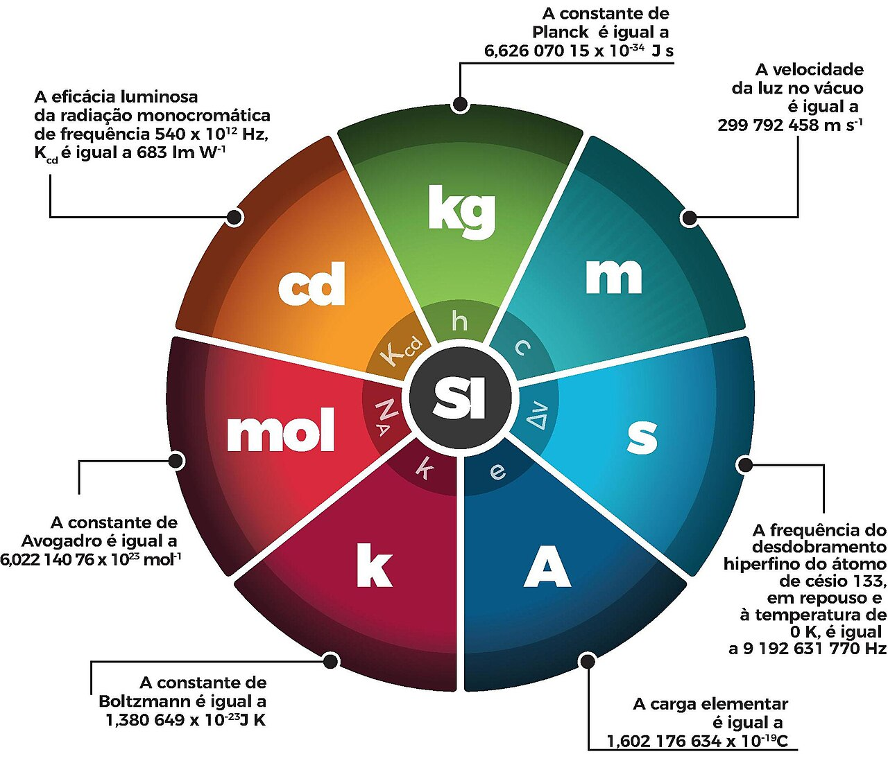
Área de superfícies planas
O que é área?
É a medida da superfície de uma figura. Expressa comumente na unidade de metros quadrado (m2), centímetro quadrado (cm2) ou quilômetro quadrado (km2).
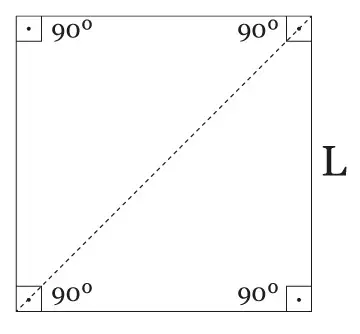
Área de superfícies planas
Retângulo
Possui 4 lados e 4 ângulos retos (90º). Lados opostos possuem a mesma medida e são paralelos.
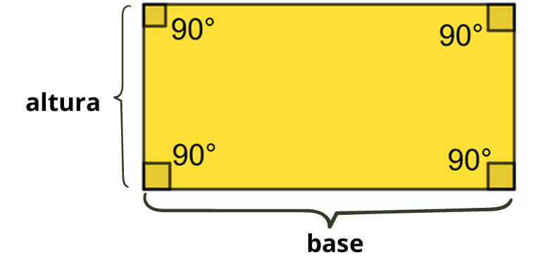
Área de retângulo:
\(Área = base * altura\)
\(A = b*h\)
Área de superfícies planas
Quadrado
Tipo especial de retângulo onde todos os lados possuem a mesma medida.
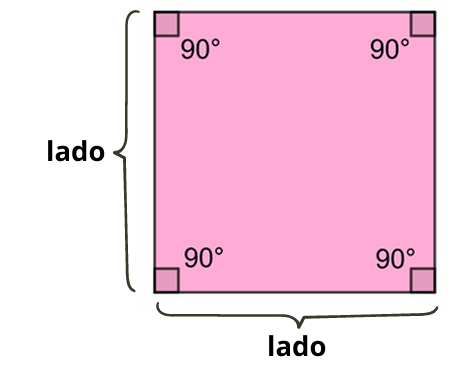
Área de quadrado:
\(Área = lado * lado\)
\(A = l^2\)
Área de superfícies planas
Paralelogramo
Figura com 4 lados, em que os lados opostos são paralelos e têm a mesma medida.
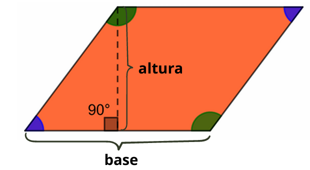
Área de paralelogramo:
\(Área = base * altura\)
\(A = b*h\)
Área de superfícies planas
Losango
Todos os lados com mesma medida. Diagonais se cruzam em ângulo reto (90º).
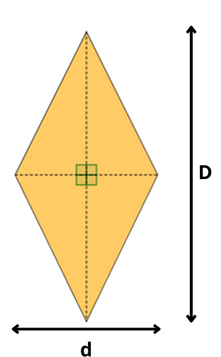
Área de losango:
\(Área = \frac{diagonal~maior~*~diagonal~menor}{2}\)
\(A = \frac{D~*~d}{2}\)
Área de superfícies planas
Trapézio
Quadrilátero que tem apenas um par de lados paralelos.
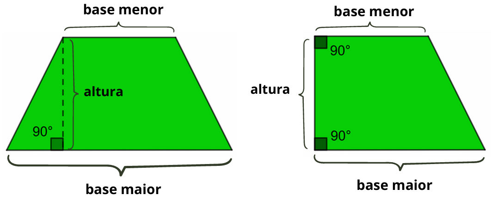
Área de trapézio:
\(Área = \frac{(base~maior~+~base~menor)~*~altura}{2}\)
\(A = \frac{(B~+~b)~*~h}{2}\)
Área de superfícies planas
Triângulo
Figura com três lados. Vários tipos, mas mesma fórmula de área.
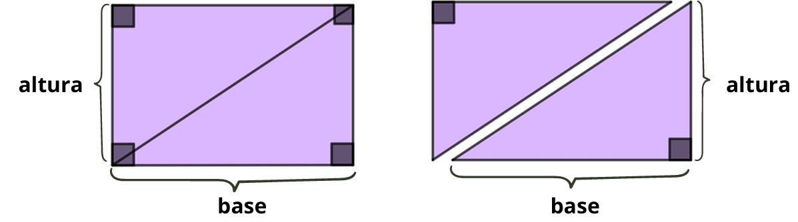
Área de triângulo:
\(Área = \frac{base~*~altura}{2}\)
\(A = \frac{b~*~h}{2}\)
Área de superfícies planas
Círculo
Figura formata por todos os pontos que estão a uma distância menor ou igual ao raio de um ponto central, chamado de centro.
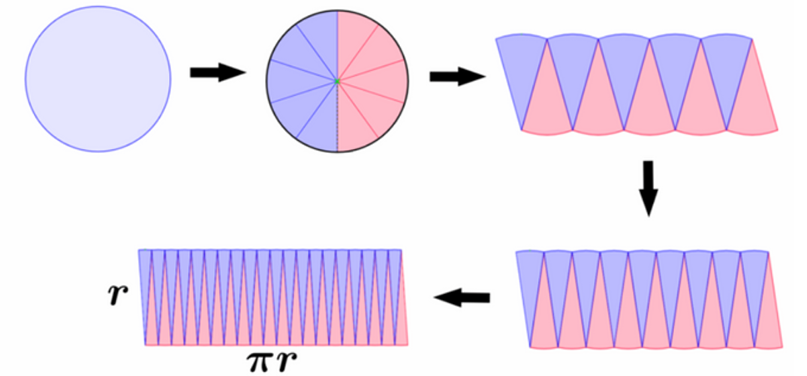
Área de círculo:
\(Área = altura~(r)*base~(\pi*r)\)
\(A = \pi * r * r = \pi * r^2\)
Área de superfícies planas
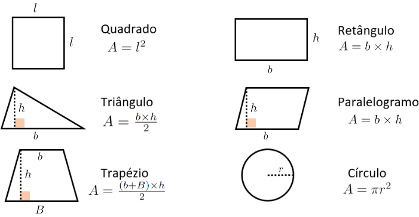
Área de superfícies 3d
Cilindro
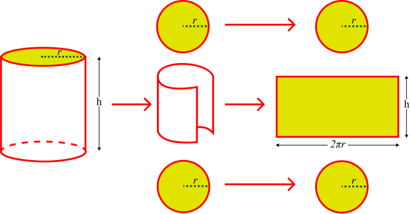
\(Área = (2*\pi*r^2) + (2*\pi*r*h)\)
Volume de objetos
O volume de um corpo diz respeito ao espaço que ele ocupa em termos das 3 dimensões.
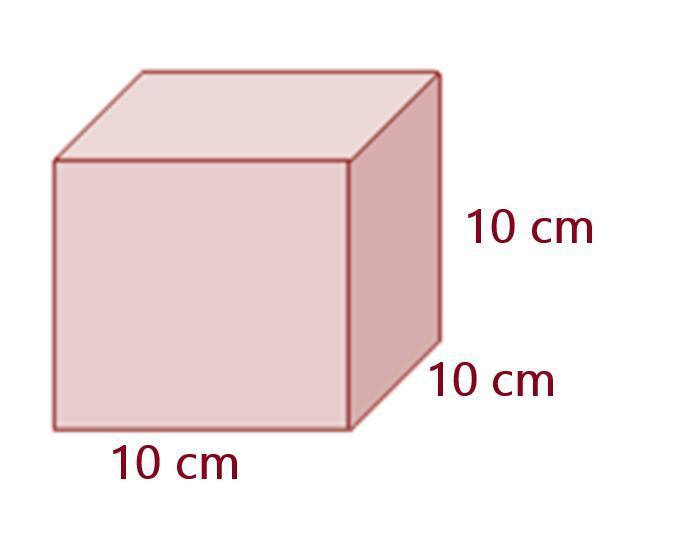
\(Volume = 10 x 10 x 10 = 1000 cm^3\)
Volume
Cilindro
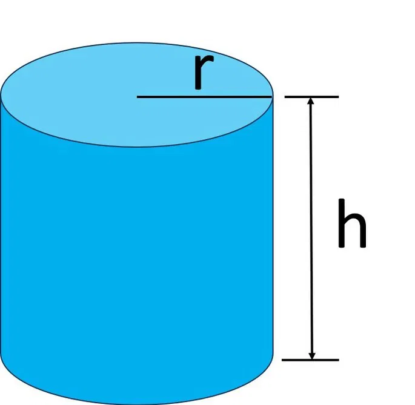
\(Área = (2*\pi*r^2) + (2*\pi*r*h)\) e \(Volume = \pi * r^2 * h\)
Transformação de unidades
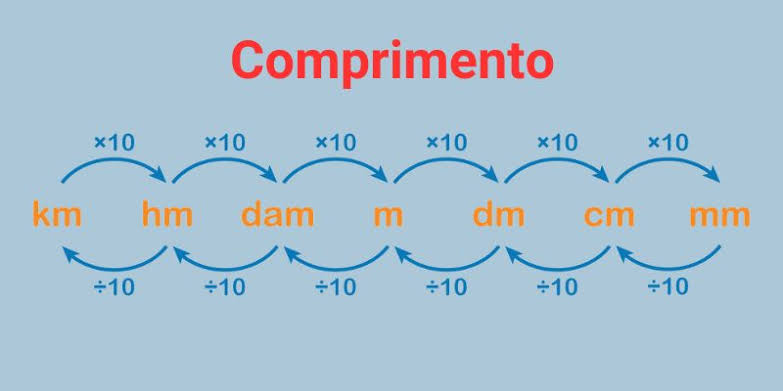
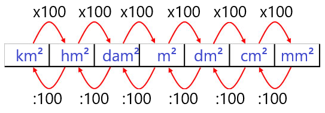
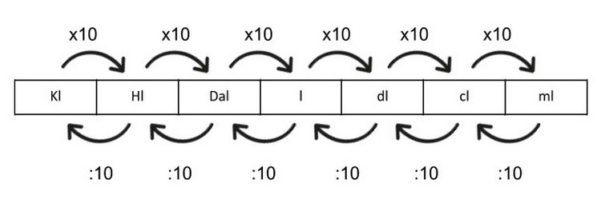
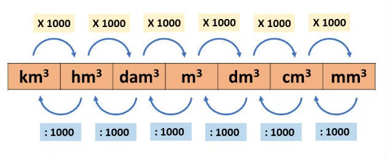
Outros cálculos importantes
Regra de 3
- A regra de três simples é uma proporção entre duas grandezas.
ex: Um carro gasta 10 L de gasolina a cada 140 km, quanto o carro gasta em 1000 km:
\[ \begin{array}{c|c} \text{Distância (km)} & \text{Combustível (L)}\\ \hline 140 & 10\\ 1000 & x \end{array} \]
\[ \frac{140}{1000} = \frac{10}{x} \]
\[ 140x = 1000 \cdot 10 \]
\[ x = \frac{10000}{140} \]
\[ \boxed{x = 71,43\text{ L}} \]
Outros cálculos importantes
Porcentagem
- Forma de medir uma parte em relação ao todo.
ex: Tenho 10% de umidade no solo. Significa que do peso ou do volume total de solo 10 partes são ocupadas pela água. Se for em 100 g de solo são 10 g de água, como:
\(10\%= \frac{10*100}{100}= 10g\)
\(10\%= 0,1*100= 10g\)
\(Valor~\%=\frac{valor~final-valor~inicial}{valor~inicial}*100\)
- Porcentagens são comutativas.
ex: 10% de 50 é igual que 50% de 10.
\(0,1*50 = 5\)
\(0,5*10 = 5\)
Prática 1
Prática 1
Lista de questões relacionadas ao conhecimento básico e intermediário em matematica, transformação de unidades e cálculos de área e volume.
Lista enviada amanhã (11/08/2026) via email.
Entrega no início da próxima aula teórica (18/08/2026).
Fim!